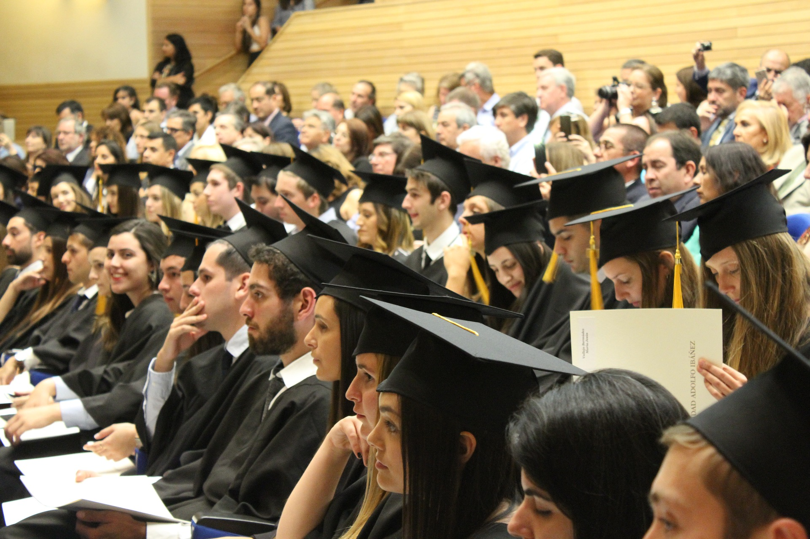

Department of Computer Science

Important News and Events
Sonia Kovalevsky Day
An annual outreach program to encourage young women to explore mathematics-related careers. The event offers mathematics activities for young women via hands-on workshops and a career panel for question & answer. Sponsored by the department and other AUM offices. The Sonia Kovalevsky Mathematics High School Day is an annual program of mathematics activities for young women. Sponsored by the Association for Women in Mathematics (AWM) and Auburn Montgomery's Department of Mathematics and Computer Sciences, it is named in honor of Sonia Kovalevsky, who was the first woman to earn a doctorate in mathematics in 1874. The event is designed to encourage high school-aged women to consider careers in mathematics and the sciences. Sonia Kovalevsky Days have been organized by AWM and institutions around the country since 1985. It is generally held at AUM during the latter half of February or early March.Student Clubs and Organizations
Mathematics Club
Activities include math games, puzzles, discussions of mathematics related problems, etc. Club members form the core of the Math Jeopardy Team! The team usually attends the Southeastern Section of the MAA (Mathematical Association of America) conference and competition.Computer Club
Activities include analyzing/studying codes, developing programming projects, etc. Club members are usually the core members of the team competing in the ACM (Association for Computing Machinery) Southeast USA Regional Intercollegiate Programming Contest. Our computer club is also a student chapter of ACM at AUM.Engineering ClLub
Activities include robotics, radio control plane, etc. Some members are also members of the Math or Computer clubs. The club has an engineering lab. Students use the lab to perform experiments. The lab also houses a Biodiesel system. The system can convert waste cooking oil to biodiesel fuel. There is an annual engineering competition open to students registered in the “Introduction to Engineering” class. WindTurbine, electric motor bike, robotic arms, etc. are some past competition projects.